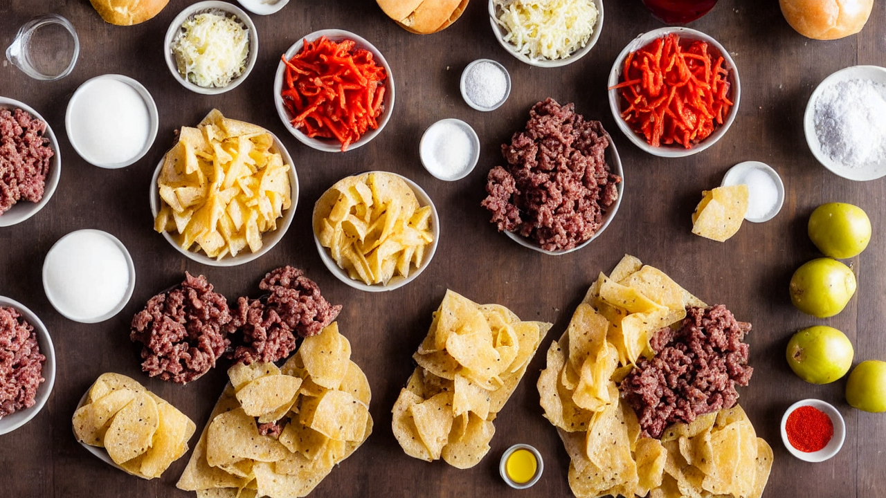
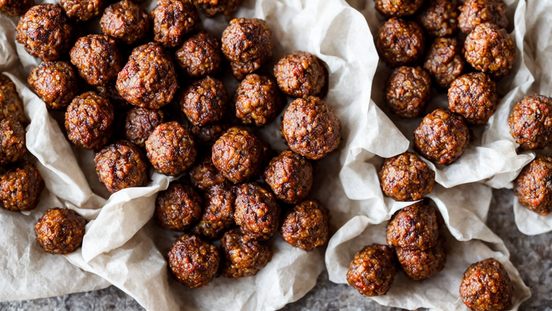
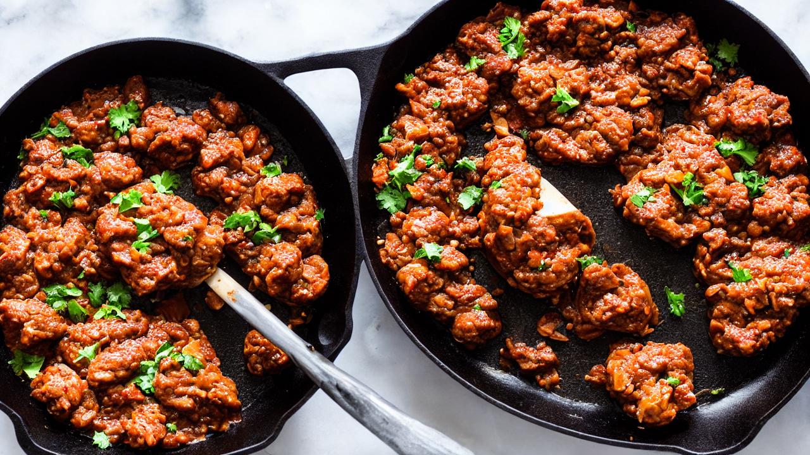
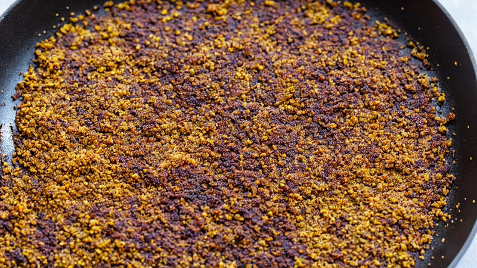
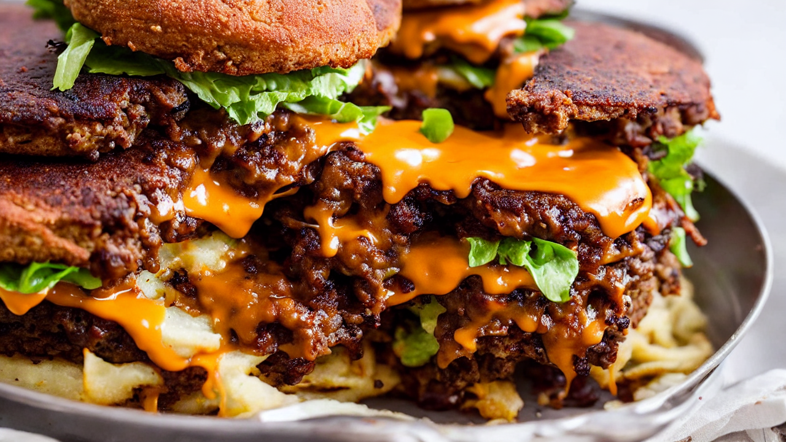
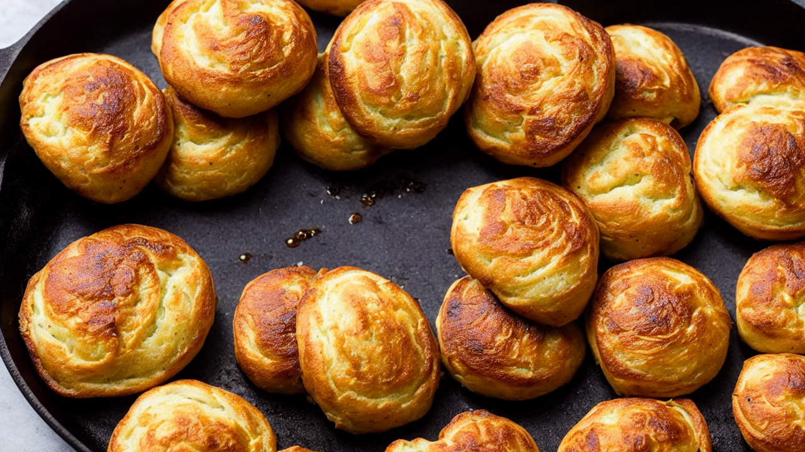
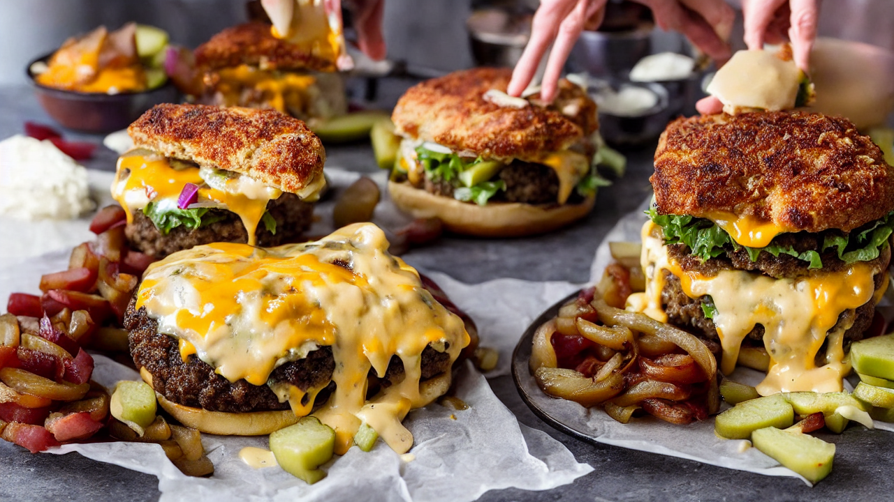
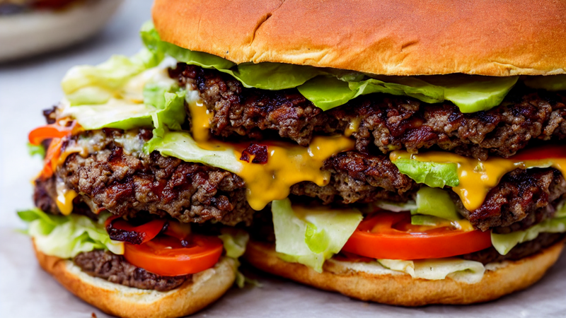
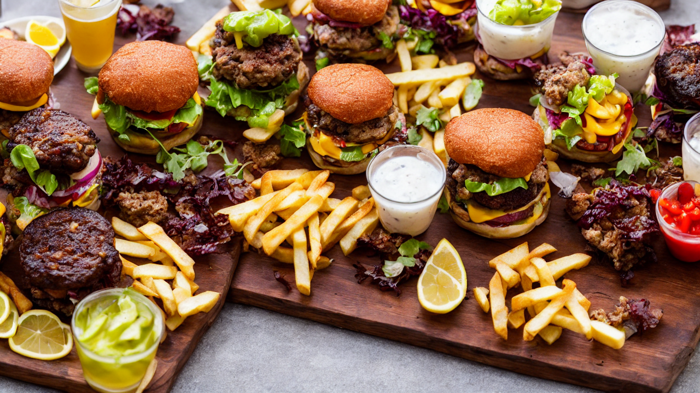

Perfect Smash Burgers | Crispy Lace Edges & Juicy Centers
These Smash Burgers have the crispiest edges, juiciest centers, and the most irresistible cheese pull you've ever seen. Using a simple technique and basic ingredients, you'll get diner-quality burgers that beat any fast food chain. Ready in 15 minutes flat! #SmashBurger
Ingredients
- 1 pound ground beef with 80/20 fat ratio
- American cheese slices
- soft potato buns
- kosher salt
- black pepper
- yellow mustard
- pickles
- thinly sliced onion
- That's it!
Instructions

These Smash Burgers have the crispiest lacey edges and the juiciest centers you've ever tasted. Better than any fast food chain, and ready in 15 minutes. Let's go!

You'll need: 1 pound ground beef with 80/20 fat ratio, American cheese slices, soft potato buns, kosher salt, black pepper, yellow mustard, pickles, and thinly sliced onion. That's it!

Divide the beef into 2-ounce balls. Do not overwork the meat! Just gently form loose balls. The less you handle them, the juicier your burger will be.

Get your cast iron skillet screaming hot over high heat. Place a beef ball on the skillet and immediately smash it flat with a sturdy spatula or burger press. Push hard and hold for 10 seconds.

Season generously with kosher salt and black pepper right on top. Squirt a thin line of yellow mustard across the patty. This is the secret to that tangy, caramelized crust.

Cook for 2 minutes without touching it. You'll see the edges turn brown and crispy with those iconic lace edges forming. Flip once, add a slice of American cheese, and cook for 1 more minute.

Toast your potato buns face-down in the beef drippings until golden brown. This step takes 30 seconds but adds so much flavor and crunch to every bite.

Stack two patties with melted cheese on the toasted bun. Add pickles, thinly sliced onion, and a drizzle of your favorite sauce. Press down gently and watch that cheese pull!

Cut it in half to reveal that perfect cross-section. Crispy edges, melted cheese, juicy beef, and a toasted bun. This is burger perfection, and you just made it in your kitchen!

Subscribe for more recipes that prove homemade beats takeout every single time. Tell me in the comments: single or double stack?